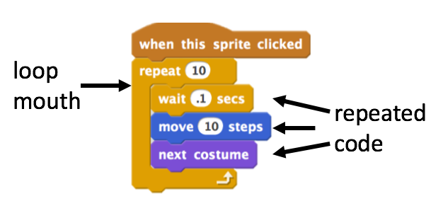

Section 4 Loops
In this section we will get to grips with a key control feature of programming - looping. Looping at its simplest is just doing things over and over again until you have some reason to stop. Loops are a way of making the computer really work for you.
A loop is a code construct that contains code. Think of it as a box of code that gets run over and over. In Scratch the graphical metaphor is very simple, you have a block with a mouth, inside that mouth is the loop code, everything in the mouth gets repeated.

These things make a lot more sense when you see them in use. Let’s examine some loops by building some that make music!
- Do the build a band worksheet
- Experiment with timing and the number of repeats in each repeat section to come up with a pleasing musical arrangement.
So that’s the basic idea, loops do stuff over and over. They can do set numbers of repeats, keep going forever or keep going until something else happens.
Let’s have a look at some
- Do the loop debugging worksheet
- In your critique groups or your design journal:
- Discuss the importance of the counter in the loop? When can it break the code?